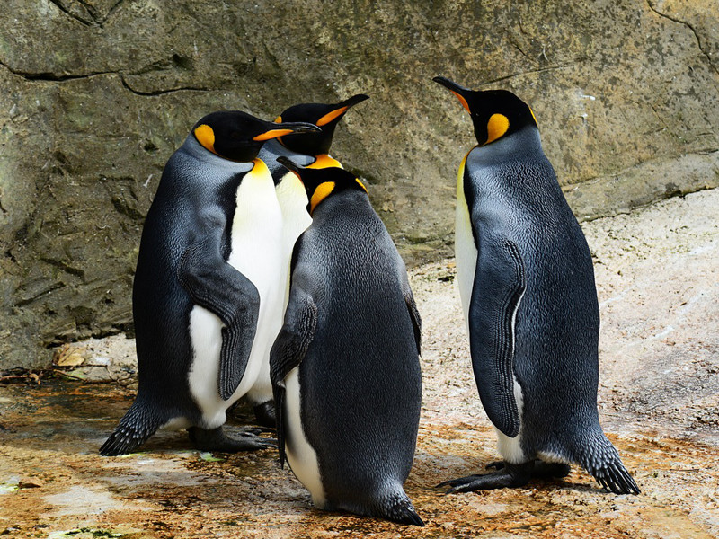
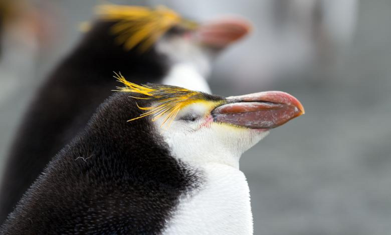
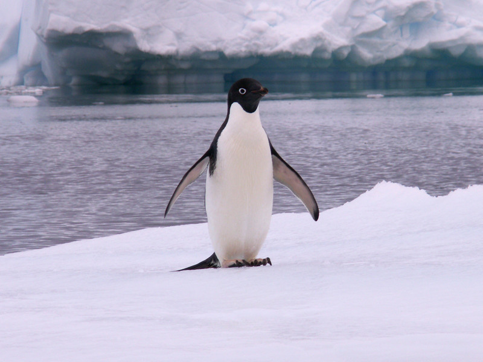
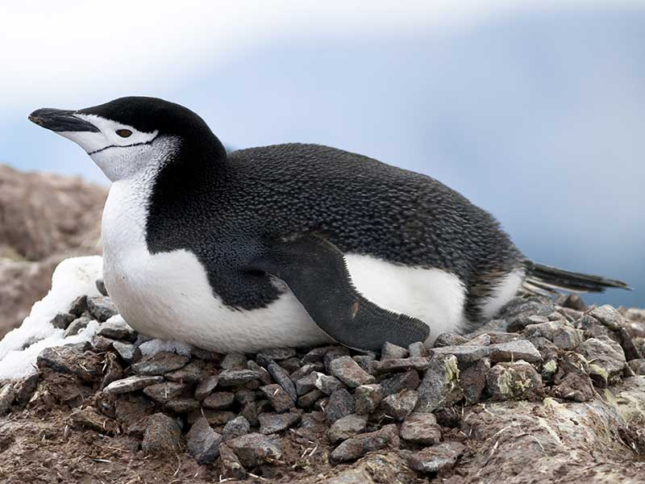
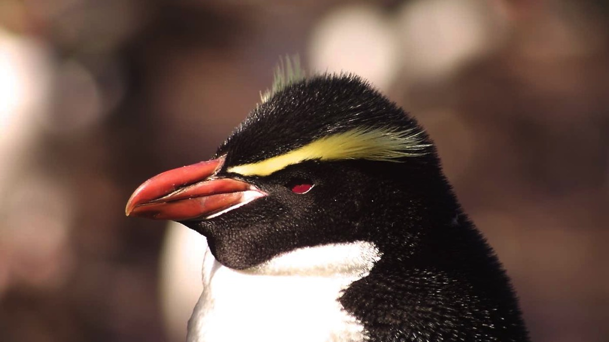
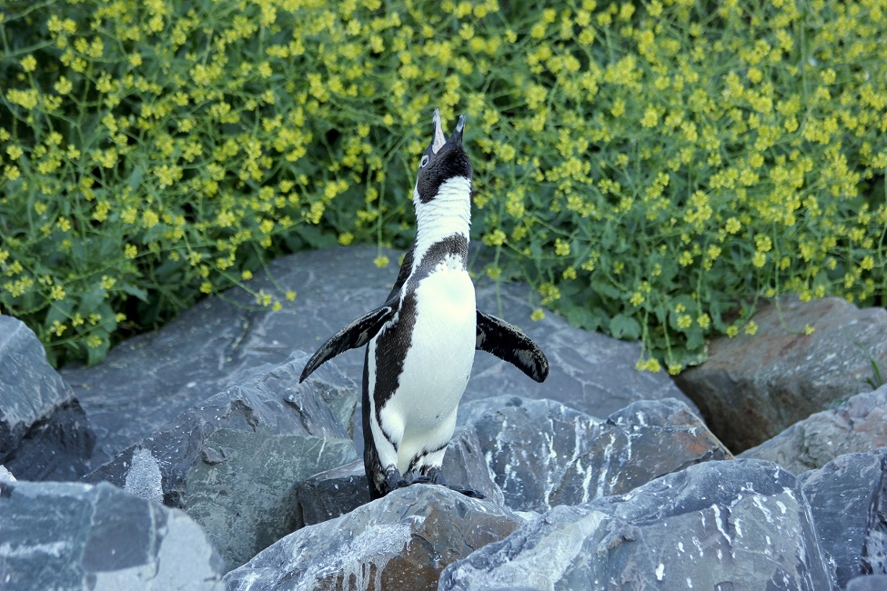

Pygoscelis Genus – Brush-tailed Penguins. Life expectancy in the wild: 10-15 years.

King Penguin
Aptenodytes Genus – Great Penguins. Life expectancy in the wild: 20 years.

Royal Penguin
Eudyptes Genus – Crested penguins. Life expectancy in the wild: 12 years.

Adelie Penguin
Genus Pygoscelis – Brush-tailed Penguins. Life expectancy in the wild: 10 years.

Chinstrap Penguin
Pygoscelis Genus – Brush-tailed Penguins. Life expectancy in the wild: 12 years.

Snares Penguin
Eudyptes Genus – Crested penguins. Life expectancy in the wild: 11 years.

African Penguin
Spheniscus Genus – Banded Penguins. Life expectancy in the wild: 10-12 year.
Hello Penguins!!
Hello Penguins!!
Welcome to my webpage
I hope you find this useful. It's really just a bunch of random information about Penguins. Most of the date in this webpage was collected from Penguins-World site.
The top 3 most known penguins:
Emperor Penguin
Royal Penguin
King Penguin
Penguins that you might have never heard before:
Snare Penguin
Rockhopper Penguin
Yellow-eyed penguin
African Penguin
Penguin Motion
What's penguin motion called?
The walking motion when penguins are on the move from one location to another is called
waddle. Penguins have short legs and their knees are close to their body. This makes the penguin walk look like a waddle, and hence the name. The next paragraph contains some very important information
about penguins. Youreally should pay attention to Species and Penguins tabs.